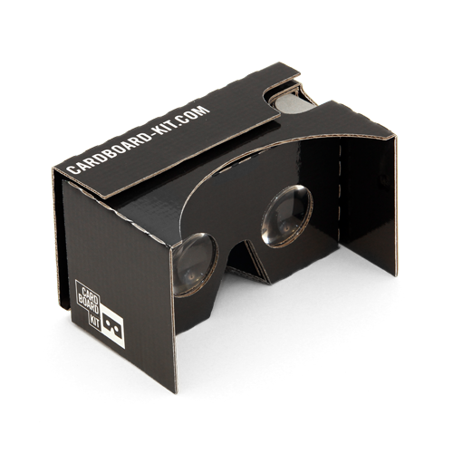

Toulouse Android User Group
OpenGL ES 2.0
Shaders
Cardboard SDK
Intervenant
Grégory Estrade @Torlus sur GitHub, Twitter...
Directeur R&D à Lyra-Network
Au programme
-
Introduction à OpenGL ES 2.0
Principes, pipeline de rendu, optimisation.
-
Shaders
Vertex shaders, Fragment shaders.
-
Cardboard
Présentation de l'accessoire, utilisation du SDK.
OpenGL ES 2.0
Eléments
- Vertices et attributs (Normales, Couleurs, coordonnées de Texture...).
- Types: Scalaires, Vecteurs, Matrices, Structures.
- Textures.
Commandes
- Setup: Viewports, compilation de Shaders, initialisations diverses...
- Paramètres passés aux Shaders: Matrice MVP, Position, Sources de lumière...
- Et enfin, glDraw*** !
OpenGL ES 2.0 - Maths
Matrices: Tranformations
Translation `[[1,0,0,dx], [0,1,0,dy], [0,0,1,dz], [0,0,0,1]]` Scaling `[[sx,0,0,0], [0,sy,0,0], [0,0,sz,0], [0,0,0,1]]` Rotation (Z-axis) `[[cos(theta),-sin(theta),0,0], [sin(theta),cos(theta),0,0], [0,0,1,0], [0,0,0,1]]`
Matrices: Model - View - Projection
- Model: Model coords -> World coords.
- View: World coords -> Camera coords.
Matrix.setLookAtM() - Projection: Camera coords -> Screen coords.
Matrix.perspectiveM(), Matrix.orthoM()
OpenGL ES 2.0 - Processing
Pipeline de rendu

Optimisations
Facteurs limitants: Memory bandwidth, Fillrate, Cache misses.
- Utiliser les VBOs (Vertex Buffer Objects). Préférer
GL_TRIANGLE_STRIP. - Bien filtrer en amont. BSP trees (Binary Space Partition).
- A choisir, soigner le rendu lumineux plutôt que les textures. Mipmapping.
OpenGL ES 2.0 - Vertex Shaders
uniform mat4 u_MVP;
uniform vec3 u_LightPos;
attribute vec4 a_Position;
attribute vec4 a_Color;
attribute vec3 a_Normal;
varying vec4 v_Color;
void main() {
...
v_Color = a_Color * diffuse;
gl_Position = u_MVP * a_Position;
}Entrées
- uniform: paramètres fixes.
- attribute: vertex attributes.
Sorties
- variables réservées:
gl_Position, gl_TexCoord... - varying: valeur calculée au sommet, qui sera interpolée lors de la rasterisation, et passée au Fragment Shader
Opérations
Trigonométrie, produits scalaires, vectoriels, multiplications de matrices...
OpenGL ES 2.0 - Fragment Shaders
precision mediump float;
varying vec4 v_Color;
varying vec3 v_Grid;
void main() {
// Calculate world-space distance.
float depth = gl_FragCoord.z / gl_FragCoord.w;
if ((mod(abs(v_Grid.x), 10.0) < 0.1)
|| (mod(abs(v_Grid.z), 10.0) < 0.1)) {
gl_FragColor = my_func( depth, v_Color );
} else {
gl_FragColor = v_Color;
}
}
Entrées
- uniform: paramètres fixes.
- varying: valeurs interpolées.
Sorties
- variables réservées:
gl_FragColor... - mot-clé discard: élimine le pixel du rendu.
Présentation du Cardboard Kit
Utilisation du SDK
- Deux viewports, une méthode
onDrawEye(Eye eye). - Génération des matrices adaptées:
eye.getEyeView()eye.getPerspective(Z_NEAR, Z_FAR)
- Données de l'acceleromètre disponibles sous forme d'une matrice de transformation:
headTransform.getHeadView(...) - Appui sur la "détente": une méthode
onCardboardTrigger()
Questions ?
/